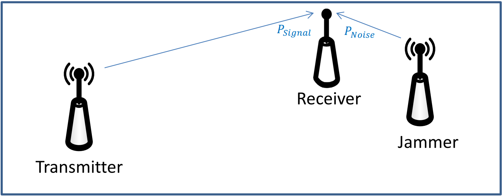
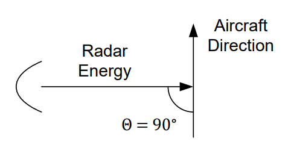

Objective 3.10#
LO# |
Description |
|---|---|
3.10 |
I can analyze jamming scenarios using the Friis equation, RADAR equation, and SNR. |
Electromagnetic Warfare Introduction#
Electromagnetic warfare (EW) is defined as military action involving the use of electromagnetic (EM) and directed energy to control the EM spectrum or to attack the enemy.
The goal of EW is simple: keep the enemy from doing his job while making sure we can still do ours. If the enemy needs their radios, we employ jamming. If they jam us, then we must find a way to maintain communications.
In our consideration of EW, we will not present any new equations, just new ways of applying the ones you already know.
Nearly everything in EW has a countermeasure, and many countermeasures have counter-countermeasures to work against them. It can quickly become confusing without some way of categorizing EW. In accordance with Joint Publication 3-85, dated 22 May 2020, EW includes three major subdivisions:
Electromagnetic Attack (EA) involves the use of EM energy, directed energy, or antiradiation weapons to attack personnel, facilities, or equipment with the intent of degrading, neutralizing, or destroying enemy combat capability and is considered a form of fires.
Electromagnetic Protection (EP) involves actions taken to protect personnel, facilities, and equipment from any effects of friendly or enemy employment of the EM spectrum that degrade, neutralize, or destroy friendly combat capability.
Electromagnetic Support (ES) involves actions tasked by, or under direct control of, an operational commander to search for, intercept, identify, and locate or localize sources of intentional and unintentional radiated EM energy for the purpose of immediate threat recognition, targeting, planning, and conducting future operations.
The topics discussed during this lesson will fall within one of these three categories. Fortunately, the basic concepts of EW are fairly simple, especially given the material you have already learned in this course. However, as the nature of radio and RADAR propagation are different in some aspects, we will consider two primary scenarios: radio jamming, which is a type of stand-off jamming, and self-protection RADAR jamming.
Radio Jamming Techniques and Countermeasures#
Radio jamming is a form of EA and is usually performed as stand-off jamming. This means the jammer is separate from the transmitter and receiver. Even though you may not immediately identify it with EA, most people inherently understand jamming. For example, the home crowd at a football game will attempt to jam the opposing team’s quarterback by making noise as he’s calling the play. In ECE terms, we use the signal-to-noise ratio (SNR) equation to describe the jamming:
In the football example, PSignal represents the volume of the quarterback as he calls out his play to his teammates, and PNoise represents the volume of the crowd. As the crowd gets louder, the SNR becomes smaller, assuming the QB is already yelling as loud as possible. At some point, the SNR becomes too small for the QB’s team to hear him.
Now, we can translate this intuition to jamming a communications radio. Figure 1 depicts a common jamming scenario. In this scenario, the power received (and thus the PSignal in the SNR equation above) at the receiving site is based on the Friis equation. Now, if you place a third transmitter near the receiver, you can effectively reduce the SNR by increasing the PNoise to a point where the receiver can no longer receive the intended signal. If two transmitters with the same antenna, power, and frequency characteristics both transmit a signal to a receiver, the closer transmitter (the jammer) has a distinct advantage in the Friis equation, since its range to the receiver is less than the original transmitter.

Figure 1: A typical radio jamming scenario (stand-off jamming).
This example is similar to two people talking to you at the same time at the same volume, but one is right next to your ear, while the other is some distance away. Obviously, the person closer to your ear has the advantage and can prevent you from hearing the desired transmitter clearly.
For this same reason, a communications jammer on an aircraft gets more effective as the aircraft gets closer to the receiver. Notice the jammer must transmit on the same frequency as the transmitter that is to be jammed, otherwise the signals will not couple.
To calculate the SNR, calculating the power of the signal and the power of the noise independently – using the Friis equation for both wireless pathways – is a perfectly valid approach. However, it can be tedious. Fortunately, we can develop a simpler form of the SNR equation. We can define the range from the transmitter to the receiver as Rtxrx, the range from the jammer to the receiver as Rjam, and the power and gain of the jammer as Pjam and Gjam, respectively. We then get:
Since the frequencies are assumed to be the same, and since both the transmitter and jammer are sending energy to the receiver, the GR terms are also the same, we can simplify to find the SNR equation for radio jamming:
Key Concept
\(SNR\ = \frac{P_{T}G_{T}R_{jam}^{2}}{P_{jam}G_{jam}R_{txrx}^{2}}\ \)
You may find this equation much more straightforward to use. Furthermore, from this equation, it is easier to see how, as the jammer gets closer to the receiver (i.e., Rjam decreases), the SNR also decreases. This means our jamming becomes more effective the closer our jammer is to the receiver.
Also, note the jamming platform can only control three variables in the Friis equation:
Amount of power in the jamming signal, Pjam
Gain of our jamming transmitting antenna, Gjam
Distance between our jammer and the object we are jamming, Rjam
Example Problem 1#
A surface to air missile (SAM) site is receiving position information about your aircraft from another location. You turn on your jamming equipment to reduce the SAM’s situational awareness. The parameters for the radio transmitter and your jamming equipment are indicated below. If the SAM site needs a minimum signal to noise ratio of 0.06 to receive and process the intended communication signal, is your jamming effective?
Understand: This is the scenario depicted in Figure 1, where
SAM radio communications |
Your jamming equipment |
|---|---|
Power transmitted = 1 kW |
Power trasnmitted = 2.0 kW |
Transmit Antenna Gain = 3 |
Transmit Antenna Gain = 20 |
Receive Antenna Gain = 3 |
Frequency = 750 MHz |
Frequency = 750 MHz |
Distance = 75km |
Distance = 80 km |
We have two wireless channels – one from the radio transmitter to the SAM’s receiver, and the other from your jammer to the SAM’s receiver.
Identify Key Information:
Knowns: We know the characteristics of the SAM transmitter and receiver, as well as the specifications of the jamming system. We also know the minimum SNR required by the SAM radio receiver.
Unknowns: Power of the signal and power of the noise.
Assumptions: None.
Plan: As both “communications links” are radio links, we can use the Friis equation to determine the signal received at the SAM from the intended source, as well as the noise received from the jammer. The equation for SNR is straightforward:
We can calculate Psignal and Pnoise separately, then calculate the SNR.
Solve: First, we determine how much power is received from the radio transmitter:
Now we can use the Friis equation to find the power received,
Now, we can calculate the power received as a result of the jammer. In essence, we use the jamming equipment as the transmitter and the SAM’s radio as the receiver. In this case, PT is the power transmitted by the jammer and GT is the gain of the jammer. Since we are jamming the SAM site, we use the SAM site antenna gain as the receiver gain, GR. Finally, since the jammer is 75 km from the SAM site, our range is 75 km.
We can now calculate the amount of jamming power received by the SAM site,
To calculate the SNR, we simply divide the power received from the radio signal by the power received from the jamming signal:
Therefore, our jamming is not effective, since we needed to get the SNR below 0.06, but the actual SNR while jamming is 0.0659. Recall that a higher SNR means a “better” communications link.
We can quickly validate this result by using the simplified SNR equation:
Answer: The jamming is not effective, since the actual SNR of 0.0659 is greater than the required SNR of 0.06.
Example Problem 2#
To increase the jamming effectiveness in the previous problem, you fly closer to the SAM site. Is your jamming effective when you are 50 km away from the site?
Understand: Distance is one of the three things jammers can control to improve jamming effectiveness, so moving closer should help.
Identify Key Information:
Knowns: In addition to the specifications of each system, we also know the new range.
Unknowns: The new SNR.
Assumptions: None.
Plan: As we mentioned in the previous problem, the equation for signal to noise ratio is
Nothing has changed with the radio transmission, so
The only thing that has changed with the jamming is the distance.
Solve: Using the Friis equation:
Therefore, the new SNR is
Again, we can validate this using the simplified SNR equation:
Answer: At a distance of 50 km, the jamming is effective since the new SNR is 0.0293 which is less than the required SNR of 0.06.
Countermeasures for Communications Jamming#
To prevent jamming, systems can implement one or more Low Probability of Intercept (LPI) techniques. Three of the many LPI techniques used by the military to protect their communications are chirp signals, frequency hopping, and direct-sequence spread spectrum (DSSS).
A chirp signal’s carrier frequency starts at some point on the frequency spectrum and sweeps up or down at a set rate. When it reaches the end of its assigned spectrum, it jumps back to the beginning and does it again. This is like changing the dial on an FM radio from one end to another. As long as the transmitter and receiver are in sync and move across the frequencies together, they are able to communicate. In order to jam signals, the jammer must be at the same frequency as the communications system. Therefore, by sweeping the transmission frequency across a spectrum, chirp signals provide some jam resistance.
Frequency hopping entails the use of multiple carrier frequencies and a pseudo-random noise (PRN) code to jump between various frequencies. Of course, the transmitter and receiver must both jump to the same frequencies at the same time. Therefore, like chirp signals, transmitter-receiver synchronization is vital to successfully receive the message. Frequency hopping is difficult to detect or jam since the transmitter never stays on one frequency long enough to allow the jammer to find the signal and effectively jam it. The quicker the frequency is changed, the harder the signal is to detect or jam. As an example, the U.S. military currently uses the SINgle Channel Ground and Airborne Radio System (SINCGARS) as a primary combat net radio for voice and data communications. SINCGARS includes an Electronic Counter-Countermeasures (ECCM) frequency-hopping capability which hops frequencies at more than 100 changes per second across the 30 to 88 MHz frequency band. As this is such a broad band, it provides significant counter-jamming protection and ensures consistent, reliable battlefield communications.
Bluetooth is another example of a frequency hopping system. This system operates in the 2.4000 – 2.4835 GHz band (the same band as some wireless routers, cordless phones, and microwave ovens), and the signal hops 1,600 times per second to 79 different frequencies within that band.
The third LPI technique is direct-sequence spread spectrum (DSSS). The digital signal to be transmitted is sampled at a much higher rate than required (this is called chipping) and then multiplied by a PRN code which makes the signal behave as a noise signal. The higher sampling rate introduced by chipping causes the signal to occupy a much higher bandwidth than the original signal, spreading out the transmitter power making it very hard to detect. Additionally, spreading the power across a large range of frequencies means the jammer has to transmit on a large range of frequencies to jam effectively, which can be costly in terms of equipment and power. The receiver applies the same PRN code, allowing it to pull the signal out of the noisy received signal. This received signal then passes through a low pass filter, which smooths out the chips so the original bits sent by the transmitter can be recovered.
RADAR Jamming#
RADAR jamming is based on the same principles as communications jamming, but is slightly different. With RADAR jamming, the RADAR returns are the signal and the jamming is the noise. Although RADAR jamming can take the form of either self-protection or stand-off jamming, we will only consider the self-protection scenario. In self-protection jamming, the RADAR’s target employs jamming to keep the RADAR from effectively detecting it.
As with communications jamming, SNR is the key consideration:
However, in this scenario, instead of using the Friis equation to describe the power of the signal, we use the RADAR equation. Therefore, the SNR becomes:
With a little simplifying, we find the SNR equation for RADAR jamming.
Key Concept $\(SNR = \ \frac{P_{RADAR}G_{RADAR}(RCS)}{{P_{jam}G_{jam}4\pi R}^{2}}\)$
In the equation above, as R gets smaller*,* SNR gets bigger. Therefore, as a jammer gets closer to a RADAR site, the jamming becomes less effective, exactly the opposite of communications jamming. This means at some point, the RADAR will burn through the jamming and now detect the target.
Example Problem 3#
A ground-based RADAR is searching for targets. The RADAR transmits 3 kW, has an antenna gain of 2000, and requires an SNR of at least 0.04 to detect a target. An aircraft with an RCS (σ) of 20 m^2^ is trying to evade detection and has a jammer transmitting 100 W with an antenna gain of 5. At what range does the jammer become ineffective?
Understand: Since this is self-protection RADAR jamming, we know there is a range at which the jamming becomes ineffective. That is, the RADAR will burn through the jamming and be able to detect the target. This is the range at which jamming will become ineffective.
Identify Key Information:
Knowns: The transmission power, gain, and minimum required SNR for the RADAR. We also know the transmission power and gain of the jammer, and the RCS of the aircraft.
Unknowns: The range at which jamming becomes ineffective.
Assumptions: LOS of is established and the RADAR has enough power to see the targets at the given range.
Plan: We can use the SNR equation for RADAR jamming to solve for the range at which the minimum SNR will occur. This is the range (between the RADAR and jammer) at which jamming becomes ineffective.
Solve: The SNR equation for RADAR jamming is:
Solving for R, we have:
Now, using the given parameters:
Answer: The jamming becomes ineffective at 691 m.
Other RADAR Countermeasures#
Sometimes jamming may not be a possibility, but there are other things we can do to protect against an enemy’s RADAR. Consider the RADAR equation again:
If our goal is to not be seen by the RADAR (which means reflecting the smallest power possible back to the RADAR), there are three things we can control:
R – distance from the RADAR site
\(\mathbf{RCS}\) – RADAR cross section
PT – the amount of power transmitted by the RADAR
Increasing distance is fairly straightforward, meaning we reduce the probability of detection by staying as far away from the site as possible. This is one of the key roles the intelligence community plays in electronic combat. If we know where the enemy RADAR sites are, we can plan our routes to minimize exposure.
The modern military spent billions of dollars over the last few decades to develop stealthy aircraft, meaning aircraft with very low RCS values. The goal of these designs are to construct the angles of aircraft so that energy is reflected away from the transmitting RADAR and to coat the surface of the aircraft with highly RADAR-absorbent materials. These are certainly effective strategies.
We typically use a single number to describe the RCS of any given airplane, but doing so is not strictly accurate. The actual RCS depends on the orientation of the airplane with regards to the RADAR system, as well as other factors such as the load-out configuration (external fuel tanks and weapons will increase RCS). Some aircraft, for instance, have a lower RCS from the side than they do from the front. In such an aircraft you can reduce your chances of being detected if you keep your wing towards the RADAR site as much as possible.
One reason the US military consistently enjoys air superiority is we combine these first two factors very well: using stealthy aircraft flying carefully constructed flight plans around known threats.
In some situations, though, flying within the detection range of an enemy RADAR is unavoidable. In this case, there are several potential options.
The first two are related and are called Suppression of Enemy Air Defenses (SEAD) and Destruction of Enemy Air Defenses (DEAD). Both are aimed at reducing the efficacy of enemy RADAR systems. SEAD can include jamming enemy RADAR sites, or performing cyber attacks to take them offline. In contrast, DEAD can include B-52 dropping bombs from 40,000 feet, a Special Forces team covertly taking out a SAM site from the ground, or a submarine launching Tomahawk missiles. Although we typically don’t think of EW options as being kinetic, sometimes it can be the best course of action.
Another more specialized kinetic option is the use of High-speed Anti-Radiation Missiles (HARMs), which can be carried by aircraft such as Navy EA-6B Prowlers. HARMs are designed to detect the carrier signal of a RADAR transmission, locate its source, and destroy the RADAR. When these missiles are in the air, the RADAR operator has two choices: he can transmit and risk the missile destroying the RADAR system or he can quit transmitting. Although HARMs can be thought of primarily as DEAD, it can also serve as SEAD. In this case, it doesn’t actually matter if the RADAR is destroyed or not, the goal is to stop the RADAR from transmitting long enough to accomplish the mission.
An interesting component to the use of HARMs is that it is can be psychological in nature. During the first Gulf War, for instance, some American crews would simply broadcast “Magnum” over the radio whenever a RADAR started transmitting. “Magnum” was the well-known code word for launching HARMs. Usually, the RADAR operators would then cease transmitting, not knowing there were no actual missiles inbound. Again, regardless of whether the missiles were launched or not, the RADARs stopped transmitting, leading to a significantly reduced probability of detection.
Finally, we can tailor our flying tactics to reduce the probability of RADAR detection. For example, recall the line of sight equation:
Since RADAR requires line of sight to detect a target, an attacking aircraft can fly lower to avoid detection. Furthermore, the simplified equation we use for line of sight is based on generally flat terrain. If there are any hills or mountains, the aircraft can terrain mask by working to keep terrain features between it and the RADAR.
The B-1 bomber was designed to do this very effectively. By flying very low, and by virtue of a low nose-on RCS, it greatly limits the opportunity for an enemy RADAR to detect it. Yet, even when detected by a RADAR, the B-1 has another advantage. Before a SAM site can launch a missile, several things need to happen. The site needs to see the aircraft on RADAR, it needs to identify it as a threat, it needs to target the missile, and then launch – all of this takes time. However, as it flies very fast, the B-1 can often cross through a SAM site’s effective engagement area before the SAM launches. Additionally, if desired, the B-1 can jam the RADAR site to temporarily blind it, or it can drop chaff to confuse the site as to the aircraft’s actual location.
As discussed with the B-1, chaff can be used as a RADAR countermeasure. Chaff is a bundle of metallic strips released into the air. Each strip acts like a small antenna that absorbs the RADAR energy and then retransmits it. The end result is that chaff creates a false RADAR target that appears larger and brighter than the actual target, thereby confusing the RADAR. This works particularly well for missiles relying on RADAR to track their target, as chaff will distract the targeting RADAR.
Example Problem 4#
An attacking force will be passing through an area of RADAR coverage and desires to use chaff as a RADAR countermeasure. If the RADAR operates at 2.5 GHz, how long should the pieces of chaff be?
Understand: To be effective, the length of the chaff must depend on the wavelength of the signal. In terms of what we have covered in this class, think of chaff as a dipole antenna. In other words, the chaff needs to be a half-wavelength to be effective.
Identify Key Information:
Knowns: We know the frequency of the RADAR and the ratio of the chaff length to the transmitted frequency.
Unknowns: The wavelength.
Assumptions: None.
Plan: Since we want the chaff to be half of a wavelength, we can simply calculate the wavelength of the frequency and divide by two.
Solve: The wavelength of the RADAR signal is
Therefore, to be effective, the chaff needs to be half this length, or 60 mm long.
Answer: The chaff needs to be 60 mm long to be effective against a 2.5 GHz RADAR.
Another potential countermeasure is for aircraft to take advantage of the limitation of a particular RADAR’s range resolution. In this scenario, aircraft can fly closer together than the range resolution and mask their true numbers.
Example Problem 5#
A flight of four fighters wish to conceal their numbers. If the search RADAR has a pulse width of 75 ns, how close must the formation stay?
Understand: The RADAR resolution tells us the maximum separation of the aircraft in order for them to appear as a single target to the RADAR. This allows the formation to hide its true strength.
Identify Key Information:
Knowns: We know the pulse width, τ, is 75 ns.
Unknowns: The range resolution, \(\Delta R\).
Assumptions: LOS of is established and the RADAR has enough power to see the targets at the given range.
Plan: We can use the equation for RADAR resolution:
where τ is the pulse width.
Solve: Solving for RADAR resolution.
Answer: Each airplane needs to stay within 11.25 meters of the aircraft in front of it to allow the formation to appear as a single RADAR target.
Finally, many RADAR systems only track moving targets – this is called Ground Moving Target Indicator (GMTI) detection. A previous reading explained how the Doppler Effect may be used with a RADAR return to determine a target’s velocity. Consider again the Doppler equation:
If \(\theta = 90^{\circ}\), then \({cos(90}^{\circ}) = 0\), and we have:
If a target is traveling perpendicular to the RADAR signal, then the returned signal does not experience a change in frequency due to the Doppler Effect. For this reason, a RADAR would assume the object has a velocity of 0 m/s due to the following equation.
After determining that the target has a velocity of 0 m/s, a GMTI RADAR would determine that the object is not a target of interest and would drop it from its scope. One such RADAR is the AN/APT-7 mounted on the bottom of the E-8C JSTARS.

Figure 2: A target moving perpendicular to the RADAR signal.
Therefore, by knowing something about the orientation of the RADAR site, an aircraft can fool certain RADAR systems into ignoring it. In reality, an aircraft doesn’t need to turn exactly 90° to disappear off of a Doppler RADAR scope. Generally, a relative angle of about 80° to 100° is sufficient.